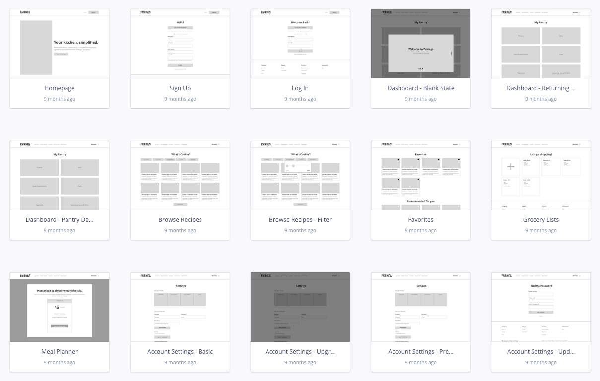
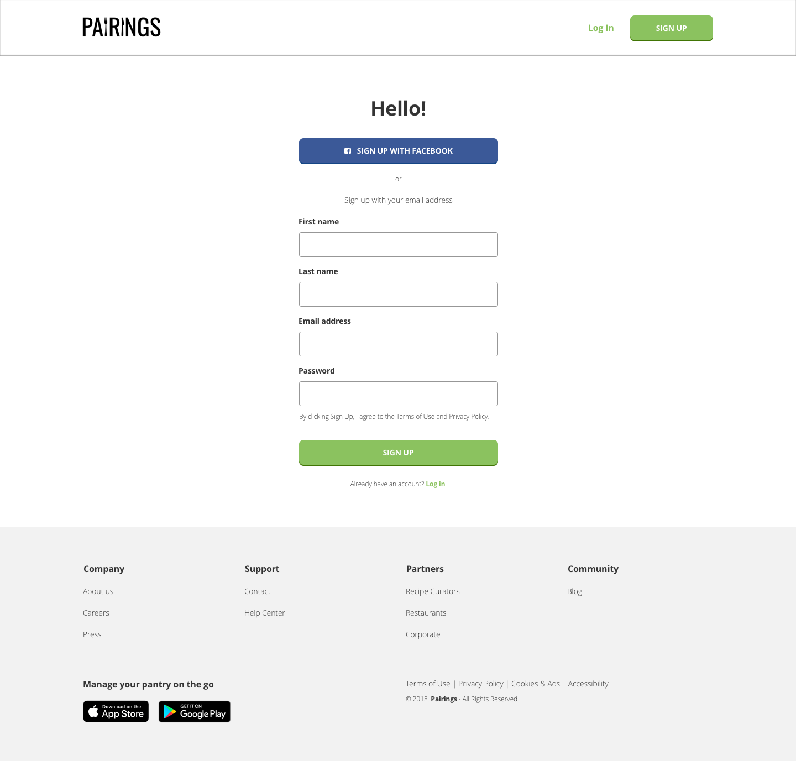
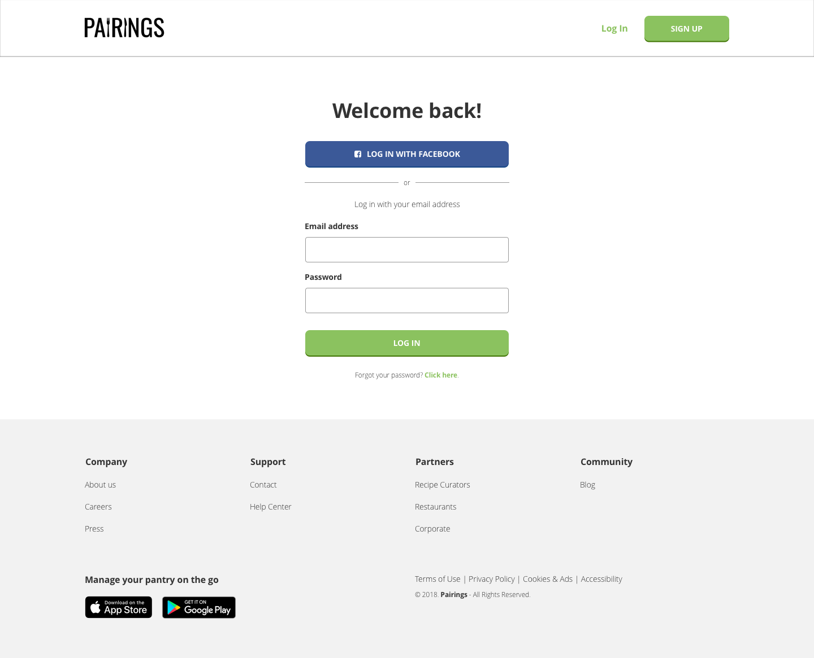
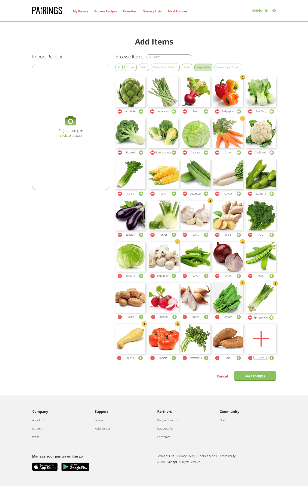
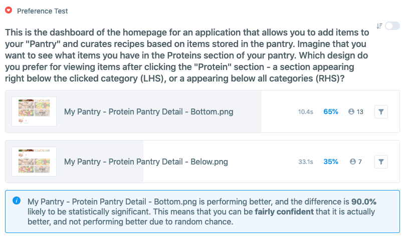
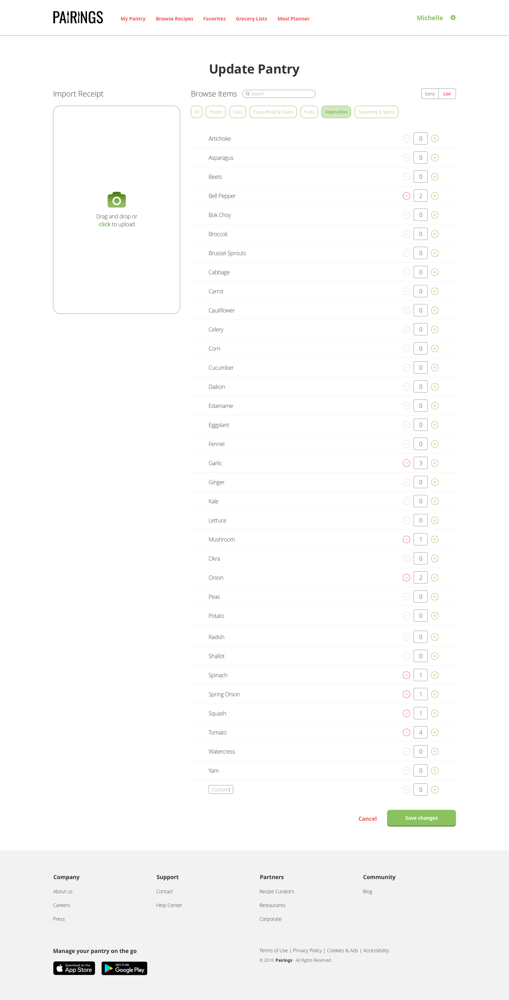

View prototype
View prototype
Overview
- Background: Pairings is a web-based cooking application that allows users to search for recipes based on the ingredients they already have
- Duration: April 2018 - September 2018 (6 months)
- My Role: Research, Ideation, Information Architecture, Branding, User Experience, User Interface
- Tools:


Research & concept
Competitive analysis
The cooking application market is extremely fragmented with many players, such as , , and Paprika. In such a saturated market, I knew that my design needed to solve a specific user problem and that the interface needed to be clean and easy-to-use for repeat users.
I had originally intended to create a broader cooking application with multiple features, but based on my research, decided to narrow my focus to one main user story: how users would keep track of their current ingredients and search for recipes.
User research
Based on a survey of 33 potential users, I discovered that:
100%
use multiple devices to search for and access recipes
~65%
use social media when signing up for accounts on other sites
Top 3
recipe search criteria are cuisine, cook time, and # of ingredients
This meant that my design would need to incorporate the following:
- A responsive web solution, as opposed to a mobile application
- Social sign-on capabilities
- Options to filter recipes by cuisine, cook time, and number of ingredients
User stories, flows, & site map
Based on the refined concept, I created user stories, user flows, and a site map to use as a foundation for my design.

New & returning user stories

Sample user flow

Site map
Wireframing & testing
Sketching, wireframing, & prototyping
I put pen to paper for some inspiration, and then translated those sketches into Sketch wireframes and a working prototype for an initial round of testing.

Preliminary sketches

Select wireframes
Invision prototype
User testing
I tested my prototype with 3 users through UserTesting.com. Some helpful feedback that I received:
- "I would like to see a 'How it Works' section. I'd want to know more before starting the free trial and entering my credit card information" – Male user, aged 31
- "I wouldn't use this site unless I knew that I could update my meal preferences and food intolerances because I'm such a picky eater. It's really important to me to only use food services that work with gluten intolerances" – Female user, aged 23
- "I generally use Pinterest for food ideas because the pictures capture my eye. With this site I feel like I would have to click around too much to get ideas when dinner should be simple for me" – Female user, aged 36
- "The name Pairings was cute once I realized the connection, but it wasn't something that was repeated often throughout the site. The name doesn't remind me of the service" – Female user, aged 23
Click here to view full recordings of the test results.
Based on the user feedback, I knew I needed to incorporate the following changes into my next iteration:
- Updating the homepage design to have clearer indications of product features
- Adding more dietary preference options, such as gluten-free and paleo
- Making sure there are a plenty of colorful photos of food items throughout the site
I also conducted an additional test to see if the product name was resonating with potential users.

Branding test
There were mixed responses from users, ranging from "dating app for foodies" to wine pairings to pairing ingredients for menu items. Wine was actually only mentioned 2 out of 13 times, which was less than what I expected.
While the results were inconclusive at best, I took that as a result in itself—I decided to run with the name Pairings, keeping in mind that the product would need good framing and an introductory explanation upfront.
Initial mockups
I created high-fidelity mockups of all pages in Sketch to test with users.
Onboarding flow
Homepage
Sign up page
Log in page
Feedback I received on the onboarding flow:
- Homepage sections could be more broken up, and adding a third pricing tier would make the design look more balanced and entice users to select a paid option
- Users would like to see an additional step in the sign in process where they can select their dietary preferences
Pantry flow
User pantry detail
Add item screen
Feedback I received on the pantry flow:
- Item images are too close together and there is not enough contrast between add and subtract buttons and food pictures
- Users would like to be able to toggle to a list view for adding items, as so many pictures can be overwhelming
I also conducted an preference test on the placement of the pantry detail section to see if users prefered the items to A) appear below all pantry categories or B) to slide out under the selected category:
Pantry detail preference test
Test results
~65% of users preferred the items to appear below all pantry categories, so I decided to stick with my original design.
Final design
Homepage
Final homepage design
The final homepage design has distinct sections and more consistant image sizing across the page. I also added a third pricing tier to balance the design and entice users to sign up for a paid option.
Onboarding flow

Expanded onboarding flow
I added in a page where users can select their recipe preferences as the second step of the sign up process. That way, once users start adding items to their pantry, their recipes will automatically filter according to their preferences instead of having to apply separate filters each time.
Pantry flow
Final add item design
List view option for adding items
In the pantry flow, item image sizes were increased and more space was added in between items to allow for better scannability. I also included an option for users to toggle between icon or list view when adding items to allow for more flexibility and accessability. Finally, the phrase 'Add Items' was changed to 'Update Pantry' for more consistency.
Click here to view a working prototype of Pairings!
Conclusion
This was a fun and challenging project to design. There were many elements that I had to think through and test that I hadn’t anticipated, like the flows for updating ingredients and sorting by pantry category. While I tried to design in a way to minimize the learning curve for users, it’s a fairly complex product to use, and one that probably requires some level of initial learning.
Through this process, I realized that having well-organized information architecture is KEY to the success of a design, especially when working with a product that has large amounts of data that can be grouped in different ways. It was challenging but interesting to think about this aspect—what categories to show and how to organize the information.